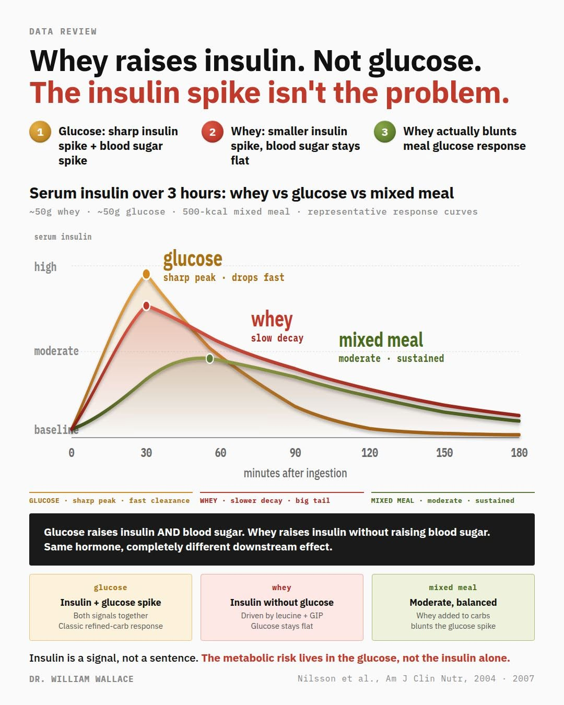

Idea of the day: Drink your coffee with skim milk + 1 Tbsp (120kcal -- tablespoon) of olive oil?
Just came up with this :) Never tried it.
Idea of the day: Drink your coffee with skim milk + 1 Tbsp (120kcal -- tablespoon) of olive oil?
Just came up with this :) Never tried it.

Gokhan reposts a Harvard Health list. Include tomatoes, olive oil, leafy greens, nuts, fatty fish, berries and other fruit, and coffee; avoid refined carbohydrates, fried foods, sugary drinks, red and processed meat, and margarine, shortening and lard. He adds two daily drinks, plus green tea, hibiscus tea and coffee, to raise his Mediterranean score.
Louis shares UChicago Medicine dietitian advice for non-alcoholic fatty liver disease: three cups of coffee a day, four tablespoons of olive oil a day and a Mediterranean diet. He reminds the group that liver fat is the main cause of insulin resistance for most people. It is clinic guidance, not a trial.

A European Heart Journal study (2007) from Charite Berlin had 16 healthy postmenopausal women drink black tea, tea with skimmed milk, or water on three days. Flow-mediated dilation improved with plain tea but the benefit disappeared with milk. Rat artery experiments showed tea boosts nitric oxide and milk caseins block it. Louis notes many studies show polyphenols improve FMD.

A shared article reports that milk, butter, yogurt and cheese contain small amounts of naturally occurring trans fats, and that a large review suggests these do not carry the cardiovascular risks tied to industrial trans fats. No numbers or review details are given in the post.
Louis highlights that butter and cheese contain similar saturated fat but affect LDL differently because of food matrix. Churning strips the natural milk-fat wrapper, while in cheese fat stays in a protein mesh, with calcium and fermentation also possibly modifying effects. The shared clip adds that cheese is no free pass given its calories and salt.

William Wallace shares the Nilsson 2004 trial: in 12 healthy volunteers, whey produced a 90% higher insulin AUC and 57% lower glucose AUC than white bread, tracking plasma branched-chain amino acids. He argues repeated large insulin surges raise IGF1 and mTOR and may have long-term costs, disagreeing with a source that dismisses the concern.